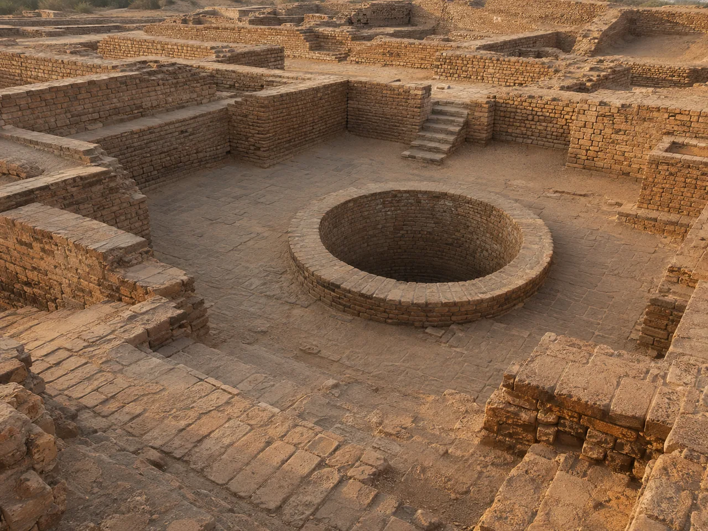

Archaeology & Ancient Civilisations
DEMO — Water and settlement
An example archaeology story for testing archive filters and related content.
By Virsapur demo editor · 2026-10-02

Development-only editorial text used to exercise the story template, cross-site search and district relationships.
References
- Demonstration reference — not for publication